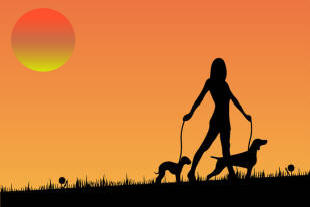

Copular or linking verbs

Hey. My dog's got no nose.
No nose? How does he smell?
Terrible!
Ha, ha. But there's an important language point buried in the
old joke. The joke, if there is one, relies on the fact that the
verb smell sometime operates as a 'normal' verb, describing
what something does, and sometimes as a copular verb, linking it to what something is like (that's why copular verbs are sometimes referred to as
'linking verbs').
Compare these and work out the difference in
meaning.
Then click here.
|
|
On the left are examples of the verbs acting normally and when they do this, we can modify them in the normal way with adverbs (badly, nastily, happily).
On the right are examples of the verbs acting as copular verbs, directly linking the subject with its attribute (in this case adjectives: bad, nasty, happy).
The meanings are:
- The dog had a poor sense of smell
- The way she turned was nasty
- He was happy to stay
- The dog had an offensive smell
- She became unpleasant and aggressive
- He remained in a happy state
 |
To be clear |
A copular verb functions in the way that the verb
to be functions. It links the subject with its complement. The
word copular is the adjective, by the way, and the noun is a
copula (plural copulas or copulae, if you prefer the
Latin).
In sentences such as these, the verb is a copula:
He is a policeman
He became furious
It lay on the floor
In the first example,
the noun policeman is not the object
of the verb to be, it is its
complement. A subject complement is also called a subject
predicate.
Subject complements are usually adjectives (second
example) or nouns (first example) but they can be prepositional phrases
(third example and as in example 9., below).
Copular verbs show the relationship between the subject and its
complement as in:
- He appears angry and upset at the result
- She acted the fool
- Mary ended up in prison
- They became wealthy
- They grew distant
- It proved difficult to understand
The colourless copula |
The verb be is the least meaningful but most flexible of the
copular verbs in English.
It is the least meaningful, i.e., colourless, because unlike verbs such as taste,
appear, turn, grow or become, it serves purely to link subject to
complement and carries little intrinsic meaning.
It is, however, also the most flexible and can be followed by more types
of complement than other copular verbs. For example:
- He is the boss (subject noun complement)
- She was unhappy with that (adjective complement)
- They are like their parents (a subject noun complement linked with be like to show comparison)
- She has been in London (prepositional phrase adverbial complement)
- She will be here (adverb complement)
- His ambition had always been to make lots of money (non-finite clause complement)
- His aim was making lots of money (another non-finite clause complement but with an -ing form of the verb rather than the infinitive)
In some analyses, only the verb be is identified as the copular verb in English with all the others being called pseudo-copular verbs.
 |
How to identify whether a verb is a copula or not and what it is doing |
The simplest test is to replace it with the verb to be.
Obviously, in many cases this will alter the meaning but if the sentence
remains grammatical, you have identified a copular verb.
In sentences 7 to 12, all the verbs can be replaced in this way.
In the following six, they can't, because the verbs are acting in the
normal way. Try replacing the verb in
black with the verb be and you will see what is meant.
- She appeared from out of nowhere
- She acted without any skill at all
- Mary ended up with a song
- The colour became them (i.e., suited)
- They grew oranges
- He proved his point
There are a lot of verbs in English that can act as copulas (or
copulae, if you prefer). Some grammarians will insist that only be is a true copula and that all the others are 'pseudo-copular verbs'. So be it.
The reason for this is that only some of them (be, become, remain,
end up, stay) can be used to link the subject and a noun-phrase
complement.
We can have, for example:
She was a doctor
She became a doctor
She remained a doctor
She ended up a doctor
She stayed a doctor
One oddity is the verb look like which can be used in this way to link
subject nouns to noun complements as in:
She looked like a doctor
but cannot be used to link the subject with an complement adjective so
*She looked like happy
is not available.
That is just about a complete list of the copular verbs that can be used
this way. We cannot have, therefore,
*She seemed a doctor
*She appeared a doctor
*She sounded a doctor
etc.
A real distinction for teaching purposes is between copular verbs which
refer to a current
condition and those which indicate a change of state or a result.
Here's a list with some possible complements
in black:
| Current condition / state | Change of state / result |
|
act
the fool appear unhappy be on the table feel sick keep busy lie on the lawn look miserable remain unhappy seem excessive smell revolting sound awful stand corrected stay calm taste like tomato turn up dead |
become involved come undone come out in spots end up rich get old go stale grow apprehensive fall ill prove impossible run to fat turn aggressive wax lyrical |
Click here for a little matching task to see if you can identify whether a verb is copular or not and what sort it is.
Dynamic and stative uses |
There is a guide to dynamic and stative
uses of verbs on this site, linked from the list of related guides at
the end, but the distinction bears treatment here
because it is often stated that we do not use copular verbs dynamically.
We do not, therefore, say:
He is being unhappy
Jane is appearing sad
I am remaining content
It is smelling vile
They are seeming clever
It is tasting good
etc.
As a rule of thumb, that's true, but we do use a range of copular verbs dynamically, especially if:
- We need to emphasise a temporary condition. We can have,
therefore:
- He is stupid (permanent condition)
vs.
He is being stupid (current, non-permanent condition) - They felt sick (and remained that way for an
unstated period)
vs.
They were feeling sick (a temporary state) - It is kept in that cupboard (permanently)
vs.
It is being kept in that cupboard (for the moment but that may change) - Margate lies on the coast (permanent location)
vs.
She is lying on the lawn (temporary location)
- He is stupid (permanent condition)
- We need to express the change of state that is occurring (column
two, above):
- I am becoming uneasy (changing from calm)
- She is turning aggressive (changing from peaceful)
- It's getting cold (changing from warm)
- I am growing old (changing from young)
- Some verbs, too, change their meaning when they are used
dynamically and cease to be copular at all:
- I remain unconvinced (my current opinion)
vs.
I am remaining here (staying) - Jane appears sad (has the look of being sad)
vs.
Jane is appearing in the play (acting) - It sounded dreadful (was)
vs.
It is sounding (making a noise) - He looks wonderful (appearance)
vs.
He is looking in the cupboard (searching) - They grew bored (became)
vs.
They grew vegetables (cultivated)
- I remain unconvinced (my current opinion)
There is clearly a need to make sure we give our learners enough context to understand the differences here.
 |
like plus a complement |
The use of like to link to the complement is often troublesome.
We have seen above how flexible the colourless copula be is in
this respect so we can have, e.g.:
He is like a tiger
My bedroom is like a luxurious hotel room
It was like a bomb going off
etc.
Other verbs have different characteristics.
- Verbs of perception (smell, sound, taste, feel, look)
can all take a simple adjectival complement as in, e.g.:
It looks interesting
She sounds unhappy
They taste delicious
It smells awful
It feels wonderful
but these verbs must also take a complement prepositional phrase with the troublesome word like when used with a noun complement. For example:
It looks like paradise
It sounds like a train
They taste like pears
It smells like strawberries
It feels like silk - The verb + like formulation can also link to a
complement clause as in, e.g.:
It looks like it will be a problem
It sounds like he is playing the piano
It smells like it's going off
She looks like she's getting angry
They seem like they are studying hard - Some other copular verbs can also link with like when
they are used in often clichéd analogies such as
It went like smoke
but these are better analysed as simple comparisons and put together with expressions such as:
He is as deaf as a post
It's as pretty as a picture
etc. - The verbs grow and become are also commonly
used with like as in, e.g.:
She grew more and more like her grandmother
He became like his father as he got older - Most copular verbs do not link with like and this
causes problems for learners because they may extend the use of
like beyond verbs of perception and be and they may
also be tempted to use like to link the verb and an
adjective complement so we get errors such as:
*It proved like a problem
*It looks like interesting
*She seems like unhappy
etc.
The problems are not, of course, helped by exposure to the use of like as an
informal, and somewhat irritating, conversational filler in expressions such as
He spoke like really rudely
She was like really unhappy
and so on.
 |
Teaching implications and ideas |
One issue for learners is that the same distinctions do not apply
universally across languages so they may be tempted to use adverbs with
copular verbs and produce sentences such as
*I feel badly.
Because there are so many verbs in English that act as copulas,
learners may become confused and fail to recognise them. However,
the range is also a resource which can be used to make texts more
interesting and vivid.
 |
Making texts more interesting |
Here's an example which can be adapted for a lesson on the area at any level.
Text 1: using only to be as the copula, in black italics.
Tom was late at the
restaurant and Mary was
unhappy because she was alone
at the table for an hour. Tom was
apologetic but excused himself by saying he
had been late at work because the job
was more difficult than he
expected.
Mary was unimpressed and said
she would not be so forgiving
next time.
Now replace the copular uses of be with more interesting alternatives to see what effect it has on the text. Then click here for a suggestion.
Text 2: using more interesting verbs as the copulas (one twice in slightly different meanings).
Tom turned up late at the
restaurant and Mary appeared unhappy
because she ended up alone at the
table for an hour. Tom grew
apologetic but excused himself by saying he
had stayed late at work because the job
proved more difficult than he
expected.
Mary remained unimpressed and said she
would not prove so forgiving next
time.
Anyone can do that. Even your students.
 |
Getting concepts clear |
| turning nasty |
Because English has such a range of copular verbs, it makes sense to
raise learners' awareness of the two fundamental types (see above for a
list):
those which describe a present state and those which describe the
transitions from one state to another.
For example:
| Put the verbs in red in the correct column and mark the sentences on the right as correct or wrong | Correct
|
||
| Example | was | was changing | |
| It appeared impossible | The job is
appearing impossible The job appears impossible |
||
| It became impossible | The calculation
is becoming impossible The calculation becomes impossible |
||
| The weather turned cold | The climate is
turning warmer The climate turned warmer |
||
| The weather remained cold | The water is
remaining cold The water remains cold |
||
| The crocodile seemed aggressive | It seems
aggressive It is seeming aggressive |
||
| The crocodile grew aggressive | The weather grew
colder The weather was growing colder |
||
etc.
 |
Helping learners to notice copular verbs |
Because languages differ in how copular verbs are used and in what
verbs qualify as copulas, we need to make sure that when learners
encounter them, in a written or spoken text, that we draw their
attention to them in some way or they will pass unnoticed.
The test above, replacement with the verb be, is one way to do
this. Exercises like this may help:
| Which verbs in red can we replace with a form of be? | ||
| Sentences | yes
|
no
|
| It appeared impossible | ||
| It became impossible | ||
| The weather turned cold | ||
| He looked ill | ||
| She is looking tired | ||
| She looked in the cupboard | ||
| They seem rich | ||
| They grew old together | ||
etc.
 |
Dealing with like |
As we noted, the use of like is sometimes troublesome and leads to error. It can be tackled with transformation exercises:
| Rephrase these sentences using or removing like. You can use a noun or a clause to make the changes. | |
| Examples | |
| Maud and Elizabeth look similar | Maud looks like Elizabeth Elizabeth looks like Maud |
| It tastes creamy | It tastes like it is made with cream It tastes like cream |
| (identical) | She sounds exactly like her mother |
| It looks fierce | (animal) |
| (sugary) | It tastes like sugar |
| He seems unhappy | (man) |
| He seems like an intelligent child | |
etc.
| Related guides | |
| dynamic and stative verb uses | for the distinctions between these concepts in verb use |
| copular verbs and complements | this is the guide in the in-service section which is fuller in that it considers the types of complements of the verbs |
| verb types | for a more technical guide to the six common clause types |
| what verbs do | which considers the kinds of meaning verbs express |